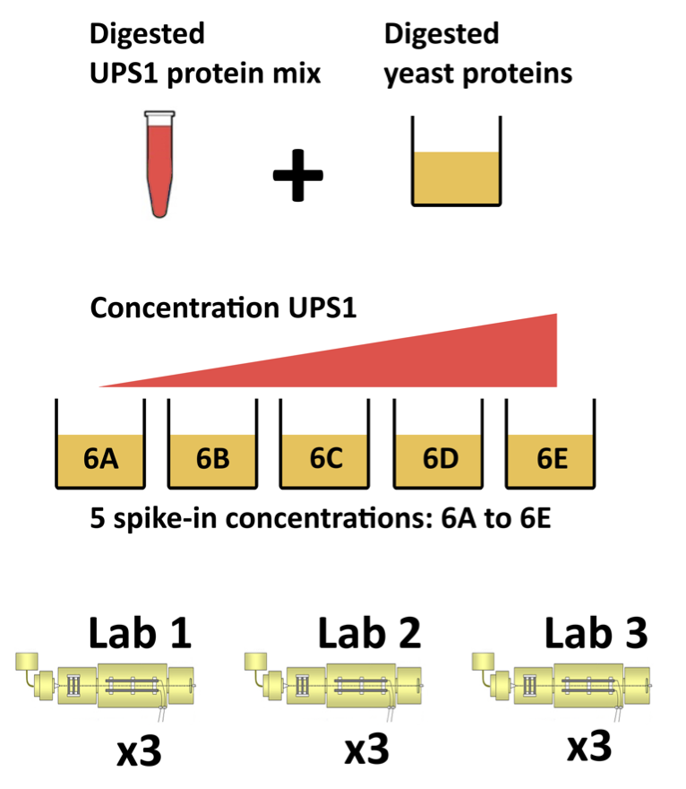

Outline
Introduction
Preprocessing
- Log-transformation
- Filtering
- Normalization
- Summarization
Intro: Challenges in Label-Free Quantitative Proteomics
MS-based workflow

Peptide Characteristics
- Modifications
- Ionisation Efficiency: huge variability
- Identification
- Misidentification \(\rightarrow\) outliers
- MS\(^2\) selection on peptide abundance
- Context depending missingness
- Non-random missingness
\(\rightarrow\) Unbalanced pepide identifications across samples and messy data
Level of quantification
- MS-based proteomics returns peptides: pieces of proteins

- Quantification commonly required on the protein level

Label-free Quantitative Proteomics Data Analysis Workflows

CPTAC Spike-in Study

Same trypsin-digested yeast proteome background in each sample
Trypsin-digested Sigma UPS1 standard: 48 different human proteins spiked in at 5 different concentrations (treatment A-E)
Samples repeatedly run on different instruments in different labs
After MaxQuant search with match between runs option
- 41% of all proteins are quantified in all samples
- 6.6% of all peptides are quantified in all samples
\(\rightarrow\) vast amount of missingness
Import the data in R
Data infrastructure
- We use the
QFeatures package that provides the infrastructure to
- store,
- process,
- manipulate and
- analyse quantitative data/features from mass spectrometry experiments.
- It is based on the
SummarizedExperiment and MultiAssayExperiment classes.
Import data in R
Load libraries
Click to see code
library(tidyverse)
library(limma)
library(QFeatures)
library(msqrob2)
library(plotly)
library(ggplot2)
Read data
Click to see background and code
- We use a peptides.txt file from MS-data quantified with maxquant that contains MS1 intensities summarized at the peptide level.
peptidesFile <- "https://raw.githubusercontent.com/statOmics/PDA/data/quantification/fullCptacDatasSetNotForTutorial/peptides.txt"
- Maxquant stores the intensity data for the different samples in columnns that start with Intensity. We can retreive the column names with the intensity data with the code below:
ecols <- grep("Intensity\\.", names(read.delim(peptidesFile)))
- Read the data and store it in QFeatures object
pe <- readQFeatures(
table = peptidesFile,
fnames = 1,
ecol = ecols,
name = "peptideRaw", sep="\t")
Explore object
Click to see background and code
- The rowData contains information on the features (peptides) in the assay. E.g. Sequence, protein, …
head(rowData(pe[["peptideRaw"]])[,c("Proteins","Sequence","Charges","Intensity","Experiment.6A_1","Experiment.6A_2" )])
## DataFrame with 6 rows and 6 columns
## Proteins Sequence Charges Intensity
## <character> <character> <character> <numeric>
## AAAAGAGGAGDSGDAVTK sp|P38915|... AAAAGAGGAG... 2 1190800
## AAAALAGGK sp|Q3E792|... AAAALAGGK 2 280990000
## AAAALAGGKK sp|Q3E792|... AAAALAGGKK 2 33360000
## AAADALSDLEIK sp|P09938|... AAADALSDLE... 2 54622000
## AAADALSDLEIKDSK sp|P09938|... AAADALSDLE... 3 18910000
## AAAEEFQR sp|P53075|... AAAEEFQR 2 1158600
## Experiment.6A_1 Experiment.6A_2
## <integer> <integer>
## AAAAGAGGAGDSGDAVTK NA 1
## AAAALAGGK NA 1
## AAAALAGGKK NA 1
## AAADALSDLEIK 1 1
## AAADALSDLEIKDSK 1 1
## AAAEEFQR NA NA
- The colData contains information on the samples
## DataFrame with 45 rows and 0 columns
- No information is stored yet on the design.
## CharacterList of length 1
## [["peptideRaw"]] Intensity.6A_1 Intensity.6A_2 ... Intensity.6E_9
Note, that the sample names include the spike-in condition.
They also end on a number.
- 1-3 is from lab 1,
- 4-6 from lab 2 and
- 7-9 from lab 3.
We update the colData with information on the design
colData(pe)$lab <- rep(rep(paste0("lab",1:3),each=3),5) %>% as.factor
colData(pe)$condition <- pe[["peptideRaw"]] %>% colnames %>% substr(12,12) %>% as.factor
colData(pe)$spikeConcentration <- rep(c(A = 0.25, B = 0.74, C = 2.22, D = 6.67, E = 20),each = 9)
- We explore the colData again
## DataFrame with 45 rows and 3 columns
## lab condition spikeConcentration
## <factor> <factor> <numeric>
## Intensity.6A_1 lab1 A 0.25
## Intensity.6A_2 lab1 A 0.25
## Intensity.6A_3 lab1 A 0.25
## Intensity.6A_4 lab2 A 0.25
## Intensity.6A_5 lab2 A 0.25
## ... ... ... ...
## Intensity.6E_5 lab2 E 20
## Intensity.6E_6 lab2 E 20
## Intensity.6E_7 lab3 E 20
## Intensity.6E_8 lab3 E 20
## Intensity.6E_9 lab3 E 20
LS0tCnRpdGxlOiAiUUZlYXR1cmVzIFN0cnVjdHVyZSIKYXV0aG9yOiAiTGlldmVuIENsZW1lbnQiCmRhdGU6ICJbc3RhdE9taWNzXShodHRwczovL3N0YXRvbWljcy5naXRodWIuaW8pLCBHaGVudCBVbml2ZXJzaXR5IgpvdXRwdXQ6CiAgICBodG1sX2RvY3VtZW50OgogICAgICBjb2RlX2Rvd25sb2FkOiB0cnVlCiAgICAgIHRoZW1lOiBmbGF0bHkKICAgICAgdG9jOiB0cnVlCiAgICAgIHRvY19mbG9hdDogdHJ1ZQogICAgICBoaWdobGlnaHQ6IHRhbmdvCiAgICAgIG51bWJlcl9zZWN0aW9uczogdHJ1ZQogICAgcGRmX2RvY3VtZW50OgogICAgICB0b2M6IHRydWUKICAgICAgbnVtYmVyX3NlY3Rpb25zOiB0cnVlCmxpbmtjb2xvcjogYmx1ZQp1cmxjb2xvcjogYmx1ZQpjaXRlY29sb3I6IGJsdWUKCi0tLQoKPGEgcmVsPSJsaWNlbnNlIiBocmVmPSJodHRwczovL2NyZWF0aXZlY29tbW9ucy5vcmcvbGljZW5zZXMvYnktbmMtc2EvNC4wIj48aW1nIGFsdD0iQ3JlYXRpdmUgQ29tbW9ucyBMaWNlbnNlIiBzdHlsZT0iYm9yZGVyLXdpZHRoOjAiIHNyYz0iaHR0cHM6Ly9pLmNyZWF0aXZlY29tbW9ucy5vcmcvbC9ieS1uYy1zYS80LjAvODh4MzEucG5nIiAvPjwvYT4KCiMgT3V0bGluZSB7LX0KCjEuIEludHJvZHVjdGlvbgoKMi4gUHJlcHJvY2Vzc2luZwoKICAgIC0gTG9nLXRyYW5zZm9ybWF0aW9uCiAgICAtIEZpbHRlcmluZwogICAgLSBOb3JtYWxpemF0aW9uCiAgICAtIFN1bW1hcml6YXRpb24KCi0tLQoKIyBJbnRybzogQ2hhbGxlbmdlcyBpbiBMYWJlbC1GcmVlIFF1YW50aXRhdGl2ZSBQcm90ZW9taWNzCgojIyBNUy1iYXNlZCB3b3JrZmxvdwoKYGBge3IgZWNobz1GQUxTRX0Ka25pdHI6OmluY2x1ZGVfZ3JhcGhpY3MoIi4vZmlndXJlcy9Qcm90ZW9taWNzV29ya2Zsb3cucG5nIikKYGBgCiAgCi0gUGVwdGlkZSBDaGFyYWN0ZXJpc3RpY3MKICAKICAtIE1vZGlmaWNhdGlvbnMKICAtIElvbmlzYXRpb24gRWZmaWNpZW5jeTogaHVnZSB2YXJpYWJpbGl0eQogIC0gSWRlbnRpZmljYXRpb24KICAgIC0gTWlzaWRlbnRpZmljYXRpb24gJFxyaWdodGFycm93JCBvdXRsaWVycwogICAgLSBNUyReMiQgc2VsZWN0aW9uIG9uIHBlcHRpZGUgYWJ1bmRhbmNlCiAgICAtIENvbnRleHQgZGVwZW5kaW5nIG1pc3NpbmduZXNzCiAgICAtIE5vbi1yYW5kb20gbWlzc2luZ25lc3MKCiRccmlnaHRhcnJvdyQgVW5iYWxhbmNlZCBwZXBpZGUgaWRlbnRpZmljYXRpb25zIGFjcm9zcyBzYW1wbGVzIGFuZCBtZXNzeSBkYXRhCgotLS0KCiMjIExldmVsIG9mIHF1YW50aWZpY2F0aW9uCgotIE1TLWJhc2VkIHByb3Rlb21pY3MgcmV0dXJucyBwZXB0aWRlczogcGllY2VzIG9mIHByb3RlaW5zCgpgYGB7ciBlY2hvPUZBTFNFfQprbml0cjo6aW5jbHVkZV9ncmFwaGljcygiLi9maWd1cmVzL2NoYWxsZW5nZXNfcGVwdGlkZXMucG5nIikKYGBgCgotIFF1YW50aWZpY2F0aW9uIGNvbW1vbmx5IHJlcXVpcmVkIG9uIHRoZSBwcm90ZWluIGxldmVsCgpgYGB7ciBlY2hvPUZBTFNFfQprbml0cjo6aW5jbHVkZV9ncmFwaGljcygiLi9maWd1cmVzL2NoYWxsZW5nZXNfcHJvdGVpbnMucG5nIikKYGBgCgotLS0KCiMjIExhYmVsLWZyZWUgUXVhbnRpdGF0aXZlIFByb3Rlb21pY3MgRGF0YSBBbmFseXNpcyBXb3JrZmxvd3MKCmBgYHtyIGVjaG89RkFMU0V9CmtuaXRyOjppbmNsdWRlX2dyYXBoaWNzKCIuL2ZpZ3VyZXMvcHJvdGVvbWljc0RhdGFBbmFseXNpcy5wbmciKQpgYGAKCi0tLQoKIyMgQ1BUQUMgU3Bpa2UtaW4gU3R1ZHkKCmBgYHtyIGVjaG89RkFMU0UsIG91dC53aWR0aD0iNTAlIn0Ka25pdHI6OmluY2x1ZGVfZ3JhcGhpY3MoIi4vZmlndXJlcy9jcHRhY0xheW91dEx1ZGdlci5wbmciKQpgYGAKCi0gU2FtZSB0cnlwc2luLWRpZ2VzdGVkIHllYXN0IHByb3Rlb21lIGJhY2tncm91bmQgaW4gZWFjaCBzYW1wbGUKLSBUcnlwc2luLWRpZ2VzdGVkIFNpZ21hIFVQUzEgc3RhbmRhcmQ6IDQ4IGRpZmZlcmVudCBodW1hbiBwcm90ZWlucyBzcGlrZWQgaW4gYXQgNSBkaWZmZXJlbnQgY29uY2VudHJhdGlvbnMgKHRyZWF0bWVudCBBLUUpIAotIFNhbXBsZXMgcmVwZWF0ZWRseSBydW4gb24gZGlmZmVyZW50IGluc3RydW1lbnRzIGluIGRpZmZlcmVudCBsYWJzCi0gQWZ0ZXIgTWF4UXVhbnQgc2VhcmNoIHdpdGggbWF0Y2ggYmV0d2VlbiBydW5zIG9wdGlvbgoKICAtIDQxXCUgb2YgYWxsIHByb3RlaW5zIGFyZSBxdWFudGlmaWVkIGluIGFsbCBzYW1wbGVzCiAgLSA2LjZcJSBvZiBhbGwgcGVwdGlkZXMgYXJlIHF1YW50aWZpZWQgaW4gYWxsIHNhbXBsZXMKCiRccmlnaHRhcnJvdyQgdmFzdCBhbW91bnQgb2YgbWlzc2luZ25lc3MKCgojIEltcG9ydCB0aGUgZGF0YSBpbiBSIAoKIyMgRGF0YSBpbmZyYXN0cnVjdHVyZQoKLSBXZSB1c2UgdGhlIGBRRmVhdHVyZXNgIHBhY2thZ2UgdGhhdCBwcm92aWRlcyB0aGUgaW5mcmFzdHJ1Y3R1cmUgdG8KICAtIHN0b3JlLCAgCiAgLSBwcm9jZXNzLCAKICAtIG1hbmlwdWxhdGUgYW5kIAogIC0gYW5hbHlzZSBxdWFudGl0YXRpdmUgZGF0YS9mZWF0dXJlcyBmcm9tIG1hc3Mgc3BlY3Ryb21ldHJ5CmV4cGVyaW1lbnRzLiAKCi0gSXQgaXMgYmFzZWQgb24gdGhlIGBTdW1tYXJpemVkRXhwZXJpbWVudGAgYW5kCmBNdWx0aUFzc2F5RXhwZXJpbWVudGAgY2xhc3Nlcy4gCgoKCmBgYHtyIGZpZy5jYXAgPSAiQ29uY2VwdHVhbCByZXByZXNlbnRhdGlvbiBvZiBhIGBTdW1tYXJpemVkRXhwZXJpbWVudGAgb2JqZWN0LiAgQXNzYXlzIGNvbnRhaW4gaW5mb3JtYXRpb24gb24gdGhlIG1lYXN1cmVkIG9taWNzIGZlYXR1cmVzIChyb3dzKSBmb3IgZGlmZmVyZW50IHNhbXBsZXMgKGNvbHVtbnMpLiBUaGUgYHJvd0RhdGFgIGNvbnRhaW5zIGluZm9ybWF0aW9uIG9uIHRoZSBvbWljcyBmZWF0dXJlcywgdGhlIGBjb2xEYXRhYCBjb250YWlucyBpbmZvcm1hdGlvbiBvbiB0aGUgc2FtcGxlcywgaS5lLiBleHBlcmltZW50YWwgZGVzaWduIGV0Yy4iLCBlY2hvPUZBTFNFLCBvdXQud2lkdGg9IjgwJSJ9CmtuaXRyOjppbmNsdWRlX2dyYXBoaWNzKCIuL2ZpZ3VyZXMvU0UucG5nIikKYGBgCgotIEFzc2F5cyBpbiBhIFFGZWF0dXJlcyBvYmplY3QgaGF2ZSBhCmhpZXJhcmNoaWNhbCByZWxhdGlvbjogCiAgCiAgLSBwcm90ZWlucyBhcmUgY29tcG9zZWQgb2YgcGVwdGlkZXMsIAogIC0gdGhlbXNlbHZlcyBwcm9kdWNlZCBieSBzcGVjdHJhCiAgLSByZWxhdGlvbnMgYmV0d2VlbiBhc3NheXMgYXJlIHRyYWNrZWQgYW5kIHJlY29yZGVkIHRocm91Z2hvdXQgZGF0YSBwcm9jZXNzaW5nCgpgYGB7ciBmZWF0dXJlc3Bsb3QsIGZpZy5jYXAgPSAiQ29uY2VwdHVhbCByZXByZXNlbnRhdGlvbiBvZiBhIGBRRmVhdHVyZXNgIG9iamVjdCBhbmQgdGhlIGFnZ3JlZ2F0aXZlIHJlbGF0aW9uIGJldHdlZW4gZGlmZmVyZW50IGFzc2F5cy4iLCBlY2hvID0gRkFMU0V9CnBhcihtYXIgPSBjKDAsIDAsIDAsIDApKQpwbG90KE5BLCB4bGltID0gYygwLCAxMiksIHlsaW0gPSBjKDAsIDIwKSwKICAgICB4YXh0ID0gIm4iLCB5YXh0ID0gIm4iLAogICAgIHhsYWIgPSAiIiwgeWxhYiA9ICIiLCBidHkgPSAibiIpCmZvciAoaSBpbiAwOjcpCiAgICByZWN0KDAsIGksIDMsIGkrMSwgY29sID0gImxpZ2h0Z3JleSIsIGJvcmRlciA9ICJ3aGl0ZSIpCmZvciAoaSBpbiA4OjEyKQogICAgcmVjdCgwLCBpLCAzLCBpKzEsIGNvbCA9ICJzdGVlbGJsdWUiLCBib3JkZXIgPSAid2hpdGUiKQpmb3IgKGkgaW4gMTM6MTgpCiAgICByZWN0KDAsIGksIDMsIGkrMSwgY29sID0gIm9yYW5nZSIsIGJvcmRlciA9ICJ3aGl0ZSIpCmZvciAoaSBpbiAxOSkKICAgIHJlY3QoMCwgaSwgMywgaSsxLCBjb2wgPSAiZGFya2dyZXkiLCBib3JkZXIgPSAid2hpdGUiKQpmb3IgKGkgaW4gNTo3KQogICAgcmVjdCg1LCBpLCA4LCBpKzEsIGNvbCA9ICJsaWdodGdyZXkiLCBib3JkZXIgPSAid2hpdGUiKQpmb3IgKGkgaW4gODoxMCkKICAgIHJlY3QoNSwgaSwgOCwgaSsxLCBjb2wgPSAic3RlZWxibHVlIiwgYm9yZGVyID0gIndoaXRlIikKZm9yIChpIGluIDExOjEzKQogICAgcmVjdCg1LCBpLCA4LCBpKzEsIGNvbCA9ICJvcmFuZ2UiLCBib3JkZXIgPSAid2hpdGUiKQpmb3IgKGkgaW4gMTQpCiAgICByZWN0KDUsIGksIDgsIGkrMSwgY29sID0gImRhcmtncmV5IiwgYm9yZGVyID0gIndoaXRlIikKcmVjdCg5LCA4LCAxMiwgOCsxLCBjb2wgPSAibGlnaHRncmV5IiwgYm9yZGVyID0gIndoaXRlIikKcmVjdCg5LCA5LCAxMiwgOSsxLCBjb2wgPSAic3RlZWxibHVlIiwgYm9yZGVyID0gIndoaXRlIikKcmVjdCg5LCAxMCwgMTIsIDEwKzEsIGNvbCA9ICJvcmFuZ2UiLCBib3JkZXIgPSAid2hpdGUiKQpyZWN0KDksIDExLCAxMiwgMTErMSwgY29sID0gImRhcmtncmV5IiwgYm9yZGVyID0gIndoaXRlIikKc2VnbWVudHMoMywgOCwgNSwgOCwgbHR5ID0gImRhc2hlZCIpCnNlZ21lbnRzKDMsIDYsIDUsIDcsIGx0eSA9ICJkYXNoZWQiKQpzZWdtZW50cygzLCA0LCA1LCA2LCBsdHkgPSAiZGFzaGVkIikKc2VnbWVudHMoMywgMCwgNSwgNSwgbHR5ID0gImRhc2hlZCIpCnNlZ21lbnRzKDMsIDEwLCA1LCA5LCBsdHkgPSAiZGFzaGVkIikKc2VnbWVudHMoMywgMTEsIDUsIDEwLCBsdHkgPSAiZGFzaGVkIikKc2VnbWVudHMoMywgMTMsIDUsIDExLCBsdHkgPSAiZGFzaGVkIikKc2VnbWVudHMoMywgMTQsIDUsIDEyLCBsdHkgPSAiZGFzaGVkIikKc2VnbWVudHMoMywgMTYsIDUsIDEzLCBsdHkgPSAiZGFzaGVkIikKc2VnbWVudHMoMywgMTksIDUsIDE0LCBsdHkgPSAiZGFzaGVkIikKc2VnbWVudHMoMywgMjAsIDUsIDE1LCBsdHkgPSAiZGFzaGVkIikKc2VnbWVudHMoOCwgNSwgOSwgOCwgbHR5ID0gImRhc2hlZCIpCnNlZ21lbnRzKDgsIDgsIDksIDksIGx0eSA9ICJkYXNoZWQiKQpzZWdtZW50cyg4LCAxMSwgOSwgMTAsIGx0eSA9ICJkYXNoZWQiKQpzZWdtZW50cyg4LCAxNCwgOSwgMTEsIGx0eSA9ICJkYXNoZWQiKQpzZWdtZW50cyg4LCAxNSwgOSwgMTIsIGx0eSA9ICJkYXNoZWQiKQpgYGAKCjwvcD48L2RldGFpbHM+CgojIyBJbXBvcnQgZGF0YSBpbiBSCgoKIyMjIExvYWQgbGlicmFyaWVzIAoKPGRldGFpbHM+PHN1bW1hcnk+IENsaWNrIHRvIHNlZSBjb2RlIDwvc3VtbWFyeT48cD4KYGBge3IsIHdhcm5pbmc9RkFMU0UsIG1lc3NhZ2U9RkFMU0V9CmxpYnJhcnkodGlkeXZlcnNlKQpsaWJyYXJ5KGxpbW1hKQpsaWJyYXJ5KFFGZWF0dXJlcykKbGlicmFyeShtc3Fyb2IyKQpsaWJyYXJ5KHBsb3RseSkKbGlicmFyeShnZ3Bsb3QyKQpgYGAKPC9wPjwvZGV0YWlscz4KCiMjIyBSZWFkIGRhdGEgCgo8ZGV0YWlscz48c3VtbWFyeT4gQ2xpY2sgdG8gc2VlIGJhY2tncm91bmQgYW5kIGNvZGUgPC9zdW1tYXJ5PjxwPgoxLiBXZSB1c2UgYSBwZXB0aWRlcy50eHQgZmlsZSBmcm9tIE1TLWRhdGEgcXVhbnRpZmllZCB3aXRoIG1heHF1YW50IHRoYXQgCmNvbnRhaW5zIE1TMSBpbnRlbnNpdGllcyBzdW1tYXJpemVkIGF0IHRoZSBwZXB0aWRlIGxldmVsLiAKYGBge3J9CnBlcHRpZGVzRmlsZSA8LSAiaHR0cHM6Ly9yYXcuZ2l0aHVidXNlcmNvbnRlbnQuY29tL3N0YXRPbWljcy9QREEvZGF0YS9xdWFudGlmaWNhdGlvbi9mdWxsQ3B0YWNEYXRhc1NldE5vdEZvclR1dG9yaWFsL3BlcHRpZGVzLnR4dCIKYGBgCgoyLiBNYXhxdWFudCBzdG9yZXMgdGhlIGludGVuc2l0eSBkYXRhIGZvciB0aGUgZGlmZmVyZW50IHNhbXBsZXMgaW4gY29sdW1ubnMgdGhhdCBzdGFydCB3aXRoIEludGVuc2l0eS4gV2UgY2FuIHJldHJlaXZlIHRoZSBjb2x1bW4gbmFtZXMgd2l0aCB0aGUgaW50ZW5zaXR5IGRhdGEgd2l0aCB0aGUgY29kZSBiZWxvdzogCgpgYGB7cn0KZWNvbHMgPC0gZ3JlcCgiSW50ZW5zaXR5XFwuIiwgbmFtZXMocmVhZC5kZWxpbShwZXB0aWRlc0ZpbGUpKSkKYGBgCgozLiBSZWFkIHRoZSBkYXRhIGFuZCBzdG9yZSBpdCBpbiAgUUZlYXR1cmVzIG9iamVjdCAKCmBgYHtyfQpwZSA8LSByZWFkUUZlYXR1cmVzKAogIHRhYmxlID0gcGVwdGlkZXNGaWxlLAogIGZuYW1lcyA9IDEsCiAgZWNvbCA9IGVjb2xzLAogIG5hbWUgPSAicGVwdGlkZVJhdyIsIHNlcD0iXHQiKQpgYGAKPC9wPjwvZGV0YWlscz4KCiMjIyBFeHBsb3JlIG9iamVjdAoKPGRldGFpbHM+PHN1bW1hcnk+IENsaWNrIHRvIHNlZSBiYWNrZ3JvdW5kIGFuZCBjb2RlIDwvc3VtbWFyeT48cD4KLSBUaGUgcm93RGF0YSBjb250YWlucyBpbmZvcm1hdGlvbiBvbiB0aGUgZmVhdHVyZXMgKHBlcHRpZGVzKSBpbiB0aGUgYXNzYXkuIEUuZy4gU2VxdWVuY2UsIHByb3RlaW4sIC4uLgoKYGBge3J9CmhlYWQocm93RGF0YShwZVtbInBlcHRpZGVSYXciXV0pWyxjKCJQcm90ZWlucyIsIlNlcXVlbmNlIiwiQ2hhcmdlcyIsIkludGVuc2l0eSIsIkV4cGVyaW1lbnQuNkFfMSIsIkV4cGVyaW1lbnQuNkFfMiIgKV0pCmBgYAoKLSBUaGUgY29sRGF0YSBjb250YWlucyBpbmZvcm1hdGlvbiBvbiB0aGUgc2FtcGxlcwoKYGBge3J9IApjb2xEYXRhKHBlKQpgYGAKCi0gTm8gaW5mb3JtYXRpb24gaXMgc3RvcmVkIHlldCBvbiB0aGUgZGVzaWduLiAKCgpgYGB7cn0gCnBlICU+JSBjb2xuYW1lcwpgYGAKCi0gTm90ZSwgdGhhdCB0aGUgc2FtcGxlIG5hbWVzIGluY2x1ZGUgdGhlIHNwaWtlLWluIGNvbmRpdGlvbi4gCi0gVGhleSBhbHNvIGVuZCBvbiBhIG51bWJlci4gCiAgCiAgLSAxLTMgaXMgZnJvbSBsYWIgMSwgCiAgLSA0LTYgZnJvbSBsYWIgMiBhbmQgCiAgLSA3LTkgZnJvbSBsYWIgMy4gCgotIFdlIHVwZGF0ZSB0aGUgY29sRGF0YSB3aXRoIGluZm9ybWF0aW9uIG9uIHRoZSBkZXNpZ24KCmBgYHtyfQpjb2xEYXRhKHBlKSRsYWIgPC0gcmVwKHJlcChwYXN0ZTAoImxhYiIsMTozKSxlYWNoPTMpLDUpICU+JSBhcy5mYWN0b3IKY29sRGF0YShwZSkkY29uZGl0aW9uIDwtIHBlW1sicGVwdGlkZVJhdyJdXSAlPiUgY29sbmFtZXMgJT4lIHN1YnN0cigxMiwxMikgJT4lIGFzLmZhY3Rvcgpjb2xEYXRhKHBlKSRzcGlrZUNvbmNlbnRyYXRpb24gPC0gcmVwKGMoQSA9IDAuMjUsIEIgPSAwLjc0LCBDID0gMi4yMiwgRCA9IDYuNjcsIEUgPSAyMCksZWFjaCA9IDkpCmBgYAoKLSBXZSBleHBsb3JlIHRoZSBjb2xEYXRhIGFnYWluCgpgYGB7cn0KY29sRGF0YShwZSkKYGBgCgo8L3A+PC9kZXRhaWxzPg==